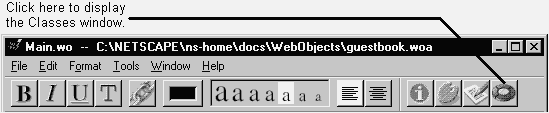
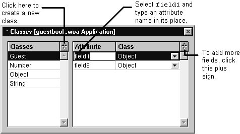

Table of Contents
Table of Contents
 Previous Section
Previous Section
Table of Contents
Previous Section
Components and applications can define classes. If you define a class in the application window, all components can access it. If you define a class starting from the component window, only that component has access to that class.
To create a class:
Click the Classes button or choose Tools->Classes.
Click the plus sign in the Classes Table.
Type the class's name.
Click the plus sign in the Attributes table to add an attribute.
Choose the attribute's class from the pop-up in the Class field.


The Classes window changes its display as the main window changes. If the main window is a component window, the Classes window shows you that component's classes. If the main window is the application window and the Application tab or Session tab is selected, the Classes window shows you application's classes.
When you're creating a class, be careful that you are creating it where you intend to create it. Check the window's titlebar to see what you are editing.
 Next Section
Next Section